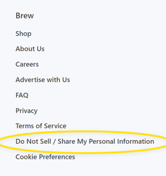
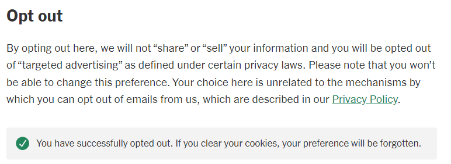

“Realistic painting of a California brown bear with fangs in Yosemite, standing in profile on red stand.” Image generated through open-source packages.
Years of court challenges prevented California’s privacy agency from enforcing its own regulations. That’s over.[1] So where will the agency intend to bite down first?
Here’s what we think businesses should focus on immediately.[2] You can read about why we think these steps are crucial below.
To avoid acronym soup, this article uses shorthand defined in the glossary. These general recommendations assume some familiarity with CCPA[3] and don’t reflect all the nuances and exceptions that may apply to a particular business. Consult a certified attorney or privacy professional to understand whether and how they map to your business. Onto the recommendations:
Note: This step is only relevant if your business allows information collected through your online service[7] to flow to others for targeted-ad purposes. The ad industry, and now the law, call that “sharing”.
capture of Ghostery extension's scan of msn.com.

The ‘Do Not Sell’ footer link on MorningBrew.com.

Screen capture of NYTimes.com after clicking ‘opt-out’ button.
If your privacy policy hasn’t been updated in the last 18 months, it’s probably out of date.
Our hunches are grounded in the agency’s guidance and public statements, as well as California privacy law in general. They reflect:
Our recommendations also reflect the watchdog’s guidance “Applying Data Minimization to Consumer Requests” published April 2, 2024. Despite the title, the guidance (1) emphasizes certain concrete focuses in addition to (2) restates general, abstract principles without new commentary. Here’s what its 2,400 words boil down to:
General principles:
Glossary
As of April 24, 2024, no uncertainty remains about whether the watchdog’s regulations are currently enforceable. The tick-tock: A California trial court decision delayed the agency’s enforcement of its regulations. An appellate court reversed, allowing enforcement of the watchdog’s existing regulations as of April 1, 2024. A last-ditch appeal to the California Supreme Court foundered. After prolonging its period to decide whether to hear the appeal, the California Supreme Court denied the petition for review on April 24, 2024. ↑
This article is about CCPA, the consumer privacy law enacted and amended by California voters in recent elections—not the 1950s-era wiretapping statute known as CIPA. We described CIPA mitigation strategies here. ↑
As a reminder: California privacy law grants consumers rights they can exercise against any business which maintains their information. There are two main buckets. One is opt-out rights. These are forward-looking, and can easily be honored through across-the-userbase settings. The second bucket is control rights. These are backward-looking and involve information collected previously: the right to know (obligating you to disclose what you know about the consumer and, in general terms, how you’ve used that info), the right to correct (requiring you to update your records to correct any inaccuracies specified by the requesting consumer): the right to delete (requiring you to delete any information you maintain about the consumer) ↑
The right to ‘limit’ is only relevant if you collect sensitive info, like precise (GPS) locations, and disclose it for any purpose that is not necessary to provide what the goods or services the user requests, such as ‘sharing’ or selling. ↑
After honoring the opt-out request, a business may inform the consumer that opting-out affected preexisting individual settings and display an option to opt back in. ↑
California privacy law puts obligations on the “business” that controls the collection of information on a website or app. Those obligations attach regardless of whether information is collected by that business itself, or is collected by a third-party cookie or tool that business authorizes. ↑
California privacy law puts obligations on the “business” that controls the collection of information on a website or app. Those obligations attach regardless of whether information is collected by that business itself, or is collected by a third-party cookie or tool that business authorizes. ↑
Technically, CCPA requires businesses to honor any “global opt-out preference signal”, not just GPC signals. However, GPC is the only signal that California regulators have specifically focused on for enforcement purposes. It’s also the principal signal readily available to consumers through browser extensions and settings. ↑
A banner covers part of a website but doesn’t prevent the user from navigating to other pages. A modal must be actioned by the user before the page behind it will be accessible. Many websites must use modals to comply with GDPR. ↑
The European GDPR regime requires user consent prior to any data collection that is not necessary to provide the requested service (i.e., a website). Users don’t need ad trackers or benign tools like Google Analytics, Adobe Fonts and Zendesk. Allowing technologies like those to collect data from Europeans—even an IP address—is prohibited until the user gives opt-in consent. Thus the birth of the cookie modal industry. (GDPR principles are in effect across the EU, with specifics and priorities set by national regulators, such as France’s CNIL and the Irish Data Protection Authority). ↑
Specifically:
“A notification or tool regarding cookies, such as a cookie banner or cookie controls, is not by itself an acceptable method for submitting requests to opt-out of sale/sharing because cookies concern the collection of personal information and not the sale or sharing of personal information. An acceptable method for submitting requests to opt-out of sale/sharing must address the sale and sharing of personal information.” Cal. Code of Reg. § 7026(a)(4).
In other words, cookie controls tend to obfuscate the simple opt-out choices California requires. California privacy law focuses on whether your business shares user info with ad trackers—and specifies required methods you must use to allow opt-outs—and says that you must disclose what you collect. Realistically, a banner can’t communicate all of the disclosures required by California privacy law without linking to a separate document (like your privacy policy). ↑
Most businesses buy cookie banners from big vendors (like OneTrust), and many don’t use the right language out of the box. In most cases, the disclosure’s text and links can be customized for different jurisdictions, shown as applicable based on the user’s location. ↑
Always obtain actual acceptance when a visitor first establishes an ongoing relationship with your business, such as by creating an account or ordering products. You want to be able to show each user took an action to accept the legal terms and privacy disclosures, such as ticking ✔in a ☑ box alongside links to the full documents. ↑
“shall, at a minimum, allow consumers to submit requests to opt-out of sale/sharing through an opt-out preference signal and at least one of the following methods—[1] an interactive form accessible via the “Do Not Sell or Share My Personal Information” link, [2] the Alternative Opt-out Link, or [3] the business’s privacy policy if the business processes an opt-out preference signal in a frictionless manner.” ↑
Using a homepage link is required whenever GPC isn’t implemented “frictionlessly,” whether unintentionally (poor implementation) or intentionally (as where a business notifies the user that the signal impacts a previous choice using anything other a link). See Cal. Code of Reg. § 7025(f)(3). ↑
For clarity, an independent ‘Limit the Disclosure of my Sensitive Personal Information’ link is not required where one link has both effects. Cal. Civ. Code § 1798.135(a)(3) (“the business [has] discretion [to] utilize a single, clearly labeled link on the business’ internet homepages, in lieu of complying with paragraphs (1) and (2), if that link easily allows a consumer to opt out of the sale or sharing of the consumer’s personal information and to limit the use or disclosure of the consumer’s sensitive personal information”). ↑
Remarks of Michele Lucan, Connecticut Deputy Associate Attorney General/ Chief of the Privacy and Data Security Section, at IAPP Global Summit 2024 panel “Direct Insights from U.S. State Privacy Enforcers.” ↑
See this PDF of the settlement [AT Sephora CCPA settlement.pdf] or the California attorney general’s press release. ↑
See this PDF [AT CPPA - Enforcement Advisory No. 2024-01.pdf] and the discussion below. ↑
The regulations are longer than the law itself, at about 26,200 words. The text of CCPA, as amended, clocks in just under 24,000. ↑